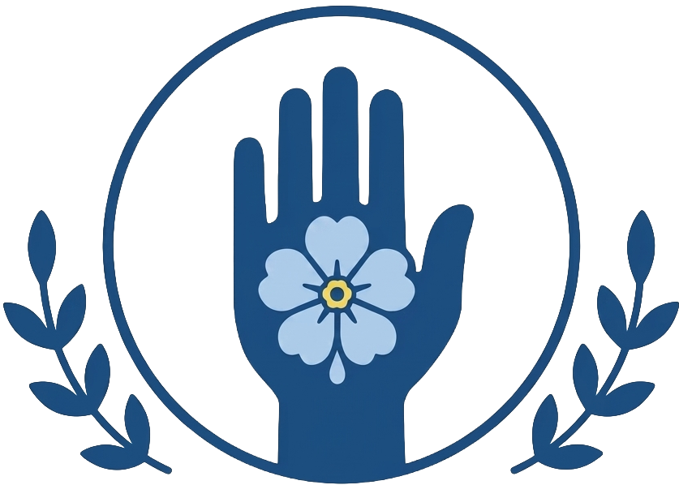

«Durante la década del 70 la Argentina fue convulsionada por un terror que provenía tanto desde la extrema derecha como de la extrema izquierda, fenómeno que ha ocurrido en muchos otros países. Así aconteció en Italia, que durante largos años debió sufrir la despiadada acción de las formaciones fascistas, de las Brigadas Rojas y de grupos similares. Pero esa nación no abandonó en ningún momento los principios del derecho para combatirlo, [...] No fue de esta manera en nuestro país: a los delitos de los terroristas, las Fuerzas Armadas respondieron con un terrorismo infinitamente peor que el combatido, porque desde el 24 de marzo de 1976 contaron con el poderío y la impunidad del Estado absoluto, secuestrando, torturando y asesinando a miles de seres humanos.»
50 Años. Memoria, Verdad y Justicia.
Línea de Tiempo
24 de Marzo de 1976
Golpe de Estado
Comienza la última dictadura civico-militar y el terrorismo de Estado.
1977
Madres de Plaza de Mayo
Comienzan las primeras rondas para reclamar por los desaparecidos.
1983
Retorno a la democracia
Asume Raúl Alfonsín y se inicia el proceso de recuperación democrática.
1984
Informe Nunca Más
La CONADEP presenta el informe sobre las desapariciones forzadas.
1985
Juicio a las Juntas
Se juzga a los principales responsables de la dictadura.
2006
Feriado Nacional
EL 24 de Marzo se convierte en feriado nacional por el Día de la Memoria por la Verdad y la Justicia.
2026
50 años
Conmemoración de los 50 años bajo el lema «Memoria, Verdad y Justicia».
Testimonios
«Yo era directora de una esquela primaria, tenía un estilo de vida muy burgués. Pero eso era lo que yo había leído en el Clarín, La Prensa, La Nación y todos esos medios que aún hoy nos siguen engañando o nos siguen ocultando las cosas que pasan en nuestro país.»
«Tenemos la democracia más larga de la historia; digámosle democracia porque se votó, es legal pero ilícita porque comete acciones permanentemente ilegales: nombrar jueces a dedo, reprimir, decir que se puede usar un arma en una 'charla etílica', dicen.
Queremos que se termine el Gobierno en tiempo y forma pero vamos a tratar de frenar todo aquello que sea contra la democracia, como hicimos como pretendieron el año pasado hacer el 2x1.»
«La luminosa idea fue juntarnos. Mi consuegra Nelva Falcone, la mamá de María Laura Falcone, asesinada en La Noche de Los Lápices en La Plata, me dijo: 'Estela no estés sola, hay otras señoras como vos que están haciendo lo mismo, buscando a los hijos y a los nietitos'. Y me junté en La Plata.
A partir de ahí, ese pañuelo blanco no me lo saqué nunca, lo tengo puesto. Es el símbolo de una lucha, es el pañal del hijo. Y qué bueno fue juntarnos porque cada una traía una educación distinta, una cultura, una propuesta política, una religión distinta. Sin embargo, la unidad, ese dolor y esa lucha hasta hoy.»
«Conmemorar es hacer memoria con otros y lo hacemos con toda la comunidad de UNAHUR y con la presencia de Taty Almeida. La memoria, la verdad y la justicia forman parte de la universidad y son necesarias para construir un país con dignidad, con justicia, con integración federal, en el que todos tengamos lugar.»
«La idea es continuar trabajando sobre el 50 aniversario del último golpe cívico-militar durante todo el año. Es un tema que tiene que ser abordado por toda la comunidad.»
Generador de Tarjeta Conmemorativa
Escribí un nombre y un mensaje para generar una tarjeta conmemorativa personalizada.

Formulario de adhesión
Sumá tu voz en defensa de la Memoria, la Verdad y la Justicia.
Tus datos serán utilizados únicamente para esta iniciativa y no serán compartidos.